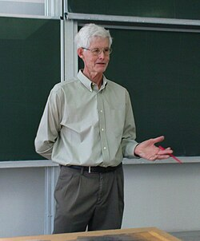
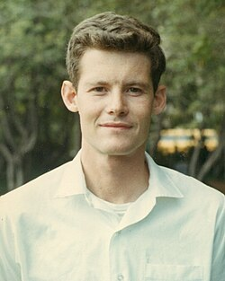

Stephen Cook | |
|---|---|
 Cook in 2008 | |
| Born | Stephen Arthur Cook December 14, 1939 Buffalo, New York |
| Education | University of Michigan (BA) Harvard University (MA, PhD) |
| Known for | NP-completeness Propositional proof complexity Cook–Levin theorem |
| Awards |
|
| Scientific career | |
| Fields | Computer Science |
| Institutions | University of Toronto University of California, Berkeley |
| Thesis | On the Minimum Computation Time of Functions (1966) |
| Hao Wang | |
Doctoral students | Mark Braverman[1] Toniann Pitassi Walter Savitch Arvind Gupta Anna Lubiw |
Stephen Arthur Cook (born December 14, 1939) is an American-Canadian computer scientist and mathematician who has made significant contributions to the fields of complexity theory and proof complexity. He is a university professor emeritus at the University of Toronto, Department of Computer Science and Department of Mathematics.
Cook is considered one of the forefathers of computational complexity theory. He won the 1982 ACM Turing Award.

Cook received his bachelor's degree in 1961 from the University of Michigan, and his master's degree and PhD from Harvard University, respectively in 1962 and 1966, from the Mathematics Department.[2] He joined the University of California, Berkeley, mathematics department in 1966 as an assistant professor, and stayed there until 1970 when he was denied reappointment. In a speech celebrating the 30th anniversary of the Berkeley electrical engineering and computer sciences department, fellow Turing Award winner and Berkeley professor Richard Karp said that, "It is to our everlasting shame that we were unable to persuade the math department to give him tenure."[3] Cook joined the faculty of the University of Toronto, Computer Science and Mathematics Departments in 1970 as an associate professor, where he was promoted to professor in 1975 and Distinguished Professor in 1985.
During his PhD, Cook worked on complexity of functions, mainly on multiplication. In his seminal 1971 paper "The Complexity of Theorem Proving Procedures",[4] Cook formalized the notions of polynomial-time reduction (also known as Cook reduction) and NP-completeness, and proved the existence of an NP-complete problem by showing that the Boolean satisfiability problem (usually known as SAT) is NP-complete. This theorem was proven independently by Leonid Levin in the Soviet Union, and has thus been given the name the Cook–Levin theorem. The paper also formulated the most famous problem in computer science, the P vs. NP problem. Informally, the "P vs. NP" question asks whether every decision problem whose answers can be efficiently verified can also be solved with an efficient algorithm. Given the abundance of such decision problems in everyday life, a positive answer to the "P vs. NP" question would likely have profound practical and philosophical consequences.
Cook conjectures that there are decision problems (with efficiently checkable solutions) that cannot be solved by efficient algorithms, i.e., P is not equal to NP. This conjecture has generated a great deal of research in computational complexity theory, which has considerably improved our understanding of the inherent difficulty of computational problems and what can be computed efficiently. Yet, the conjecture remains open and is among the seven famous Millennium Prize Problems.[5][6]
In 1982, Cook received the Turing Award for his contributions to complexity theory. His citation reads:
For his advancement of our understanding of the complexity of computation in a significant and profound way. His seminal paper, The Complexity of Theorem Proving Procedures, presented at the 1971 ACM SIGACT Symposium on the Theory of Computing, laid the foundations for the theory of NP-Completeness. The ensuing exploration of the boundaries and nature of NP-complete class of problems has been one of the most active and important research activities in computer science for the last decade.
In his "Feasibly Constructive Proofs and the Propositional Calculus"[7] paper published in 1975, he introduced the equational theory PV (standing for Polynomial-time Verifiable) to formalize the notion of proofs using only polynomial-time concepts. He made another major contribution to the field in his 1979 paper, joint with his student Robert A. Reckhow, "The Relative Efficiency of Propositional Proof Systems",[8] in which they formalized the notions of p-simulation and efficient propositional proof system, which started an area now called propositional proof complexity. They proved that the existence of a proof system in which every true formula has a short proof is equivalent to NP = coNP. Cook co-authored a book with his student Phuong The Nguyen in this area titled "Logical Foundations of Proof Complexity".[9]
His main research areas are complexity theory and proof complexity, with excursions into programming language semantics, parallel computation, and artificial intelligence. Other areas that he has contributed to include bounded arithmetic, bounded reverse mathematics, complexity of higher type functions, complexity of analysis, and lower bounds in propositional proof systems.
He named the complexity class NC after Nick Pippenger. The complexity class SC is named after him.[10] The definition of the complexity class AC0 and its hierarchy AC are also introduced by him.[11]
According to Don Knuth the KMP algorithm was inspired by Cook's automata for recognizing concatenated palindromes in linear time.[12]
Cook was awarded an NSERC E.W.R. Steacie Memorial Fellowship in 1977, a Killam Research Fellowship in 1982, and received the CRM-Fields-PIMS prize in 1999. He has won John L. Synge Award and Bernard Bolzano Medal of the Czech Academy of Sciences (2008),[13] and is a fellow of the Royal Society of London and Royal Society of Canada. Cook was elected to membership in the National Academy of Sciences (United States) and the American Academy of Arts and Sciences. He is a corresponding member of the Göttingen Academy of Sciences and Humanities.
Cook won the ACM Turing Award in 1982. Association for Computing Machinery honored him as a Fellow of ACM in 2008 for his fundamental contributions to the theory of computational complexity.[14] He was selected by the Association for Symbolic Logic to give the Gödel Lecture in 1999.[15]
The Government of Ontario appointed him to the Order of Ontario in 2013, the highest honor in Ontario.[16] He has won the 2012 Gerhard Herzberg Canada Gold Medal for Science and Engineering, the highest honor for scientists and engineers in Canada.[17] The Herzberg Medal is awarded by NSERC for "both the sustained excellence and overall influence of research work conducted in Canada in the natural sciences or engineering".[18] He was named an Officer of the Order of Canada in 2015.[19][20]
Cook was granted the BBVA Foundation Frontiers of Knowledge Award 2015 in the Information and Communication Technologies category "for his important role in identifying what computers can and cannot solve efficiently," in the words of the jury's citation. His work, it continues, "has had a dramatic impact in all fields where complex computations are crucial."
Cook has supervised numerous MSc students, and 36 PhD students have completed their degrees under his supervision.[1]
Cook lives with his wife in Toronto. They have two sons, one of whom is Olympic sailor Gordon Cook.[21]
{kind=link}
.jpg){kind=link}